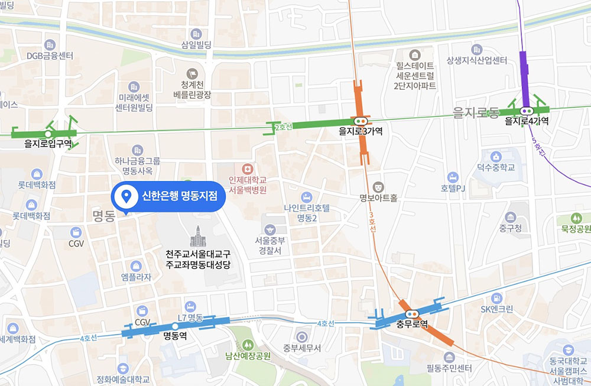
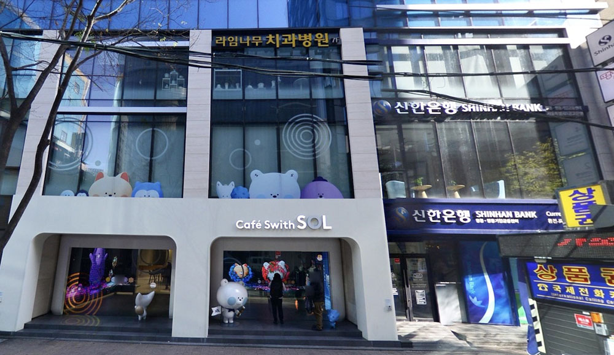
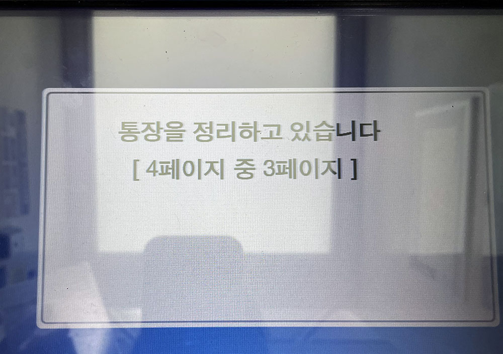
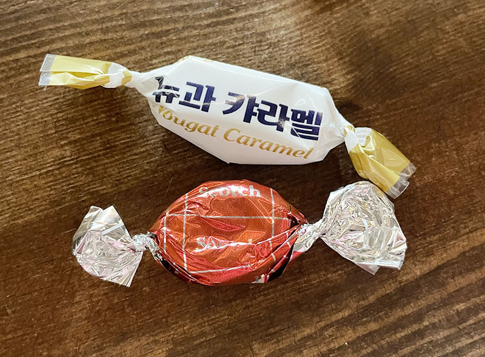

[Korea] Switch a Shinhan Bank account from ARC number to passport number
Posted on June 25, 2023 • 3 minutes • 1041 words • Category:
I never thought it would take me over 9 years to return to Seoul after leaving in 2014. My Shinhan Bank account has been frozen for a while. To check if it is still usable, I brought my passbook with me to Seoul!
Put a summary here first:
- I have successfully switched my identification document from the Alien Registration Card (ARC) to a passport.
- Since I don’t have a valid ARC, I am unable to obtain a new check card.
- For making deposits, I can use the passbook. However, if I need to make a withdrawal, I must visit the Operation Counters.
- To apply for online banking, you need to bring both your passport and national ID card from your country.
And…Let’s start!
I left some money in my bank account when I left Seoul 9 years ago. I spent most of it through online shopping after that. In 2017, I received a notification stating that my account has been frozen due to no cash flow for over 2 years.
Before visiting Korea this time, I searched for information online and found that many people were able to switch their bank account identification document from the ARC to a passport. However, it is typically required to return the ARC to the immigration officer when leaving Korea before it expires. Therefore, when you want to switch your account, you may not have the ARC as an identification document. Some banks may refuse to update the account without it. In such cases, you would need to visit the Korea Immigration Service to apply for a “Certificate of Alien Registration” (외국인등록 사실증명) to prove that you used to own that ARC number.
The Immigration Service is located far from downtown, and based on my experience, it usually takes at least half a day to complete any procedures there. Therefore, as a tourist, I would never consider going there🤣
Even though there isn’t much money left in my account, it’s still usable funds. Additionally, I wanted to check if the account is still avalible. So, I brought my passbook and expired check card with me to Seoul.
I had planned to visit Myeong-dong on Friday afternoon. Before reaching Myeong-dong, we ended up eating too much in Kwang-jang Market🤣 As a result, we decided to walk from Euljiro-saga to Myeong-dong. Coincidentally, there was a Shinhan Bank right in the Myeong-dong area when we arrived.

There is a Shinhan Bank cafe called “Cafe with SOL” on the 1st floor. You can also find ATMs on the same floor. The Operation Counters located on the 2nd floor. Since I forgot to take a photo, let me use the photos available on Naver map for reference.

Upon entering through the door on the right, you can see approximately 3 or 4 ATMs. I inserted my passbook into one of the machines. And to my surprise, it was able to update successfully!

I also tried to insert my check card, which expired in March 2018. As expected, it failed to work.
Since there was still time, I decided to go upstairs and find the bank teller for help!
The “Ajeossi” standing beside the door kindly asked me how he could help. I explained that I wanted to check if my frozen account was still usable. He helped me take a number and took me to the counter.
The bank teller, a kind “onni,” told me that many foreigners’ accounts were frozen due to their inability to come to Korea during the Covid-19 pandemic as well. She explained that I could switch my account ID from ARC to passport if I wanted to. However, the limit for cash flow would be reduced to withdraw/deposit up to 1 million a day at the operation counters or 300 thousand through online banking. She also mentioned that I wouldn’t be able to obtain a new check card since I didn’t have a valid ARC.🥲
The bank teller asked me to write down the ARC number I used before and my passport number which I want to switch on the application. Then all I need to do is signing after the proccess.
Luckily, the bank teller didn’t require the “Certificate of Alien Registration.” She asked me to write down my previous ARC number and my passport number on the application form. Everything were smooth! After completing the necessary information, all I needed to do was sign the document.

Since I couldn’t get a new check card, I asked the bank teller if I could withdraw money using my passbook at the ATM. She informed me that I could only use the passbook for deposits. If I wanted to make a withdrawal, I would have to return to the counter. It was very inconvenient for me, so I requested her assistance in withdrawing all the money from my account.
Additionally , if I want to apply for online banking in the future, I will need to bring not only my passport but also the national ID card from my country.
She also mentioned that if there is no cash flow in my account for over a year, I would have to go through the entire processing again like that day.🤣
Anyway, I finished all these things in half an hour. Very appreciate for the help provided by the two staff members! 👍🏻
It’s very easy to switch the bank account from ARC to passport! You only need to speak Korean 🤣